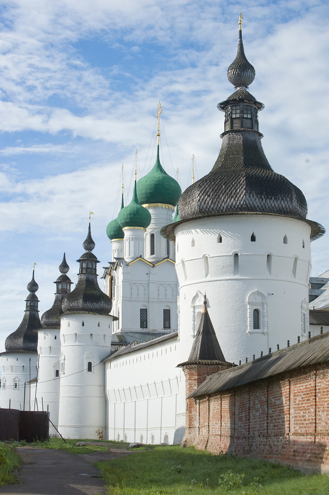
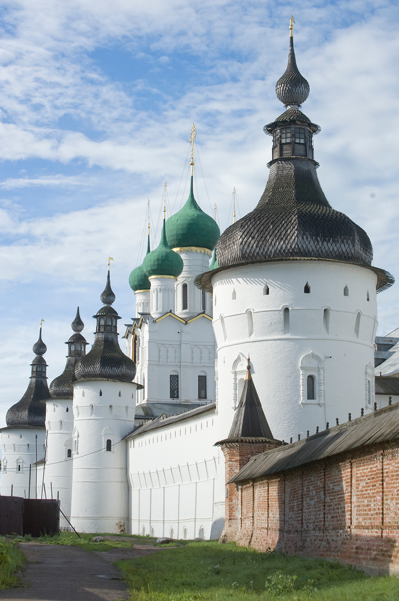

Rostow
|
Church in Rostow |
Church in Rostow
Rostov Veliky
Rostov, called the „stone symphony“, is a charming medieval city whose countless domes are pondered within the water of Nero Lake. It is one of the most historic Russian cities, having been founded through the Mayans, a Finnish tribe, and it reached its top between the 11th and the thirteenth centuries as a first-rate exchange hub alongside the Volga basin. It is one of the towns of the Golden Ring and a reputable candidate for inclusion into the UNESCO World Heritage List way to its beautiful churches and monasteries, together with its fabulous kremlin, taken into consideration 2d simplest to the Moscow Kremlin in all of Russia. Know More |
| Church of St. John the Divine in the Rostov Kremlin
Historian and structure professional William Brumfield discover one of the maximum full-size systems in a miles-visited historical site. Located a few one hundred thirty miles northeast of Moscow, Rostov is one of the earliest traditionally attested cities in Russia, first cited beneath 862 in the chronicle "Tale of Bygone Years." The Russian photographer and chemist Sergei Prokudin-Gorsky (see container text beneath) frolicked there in 1911 photographing the metropolis’s numerous historical websites. Know More |
Church in Rostow |
 
